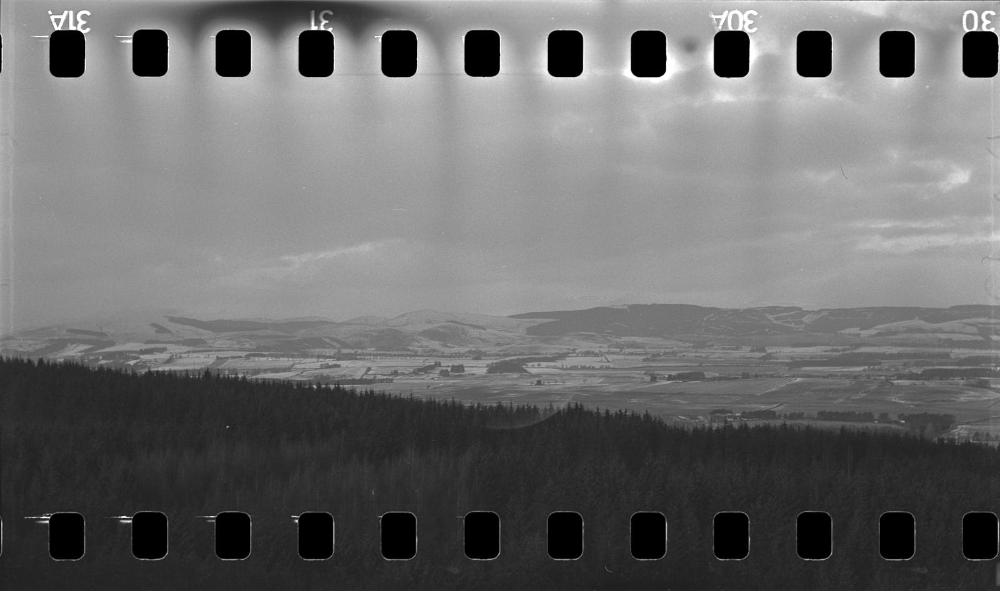
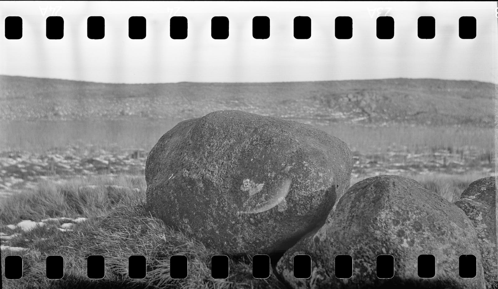

Rollei Blackbird
Playing with 35mm film in a Medium-format camera. 
I’d seen Fukukawatakashi’s work making triptychs and thought I might play around with the idea. First time out, I used a roll of Rollei Blackbird, which is rated at 64 ISO but seems to be quite laissez-faire about how you shoot it. I put it in my Agfa Isolette medium-format camera, which also seems to be quite laid back in respect of how long a film you put through it. No frame counters to get in the way of the abuse I was planning.
A couple of 3D printed plastic adaptors1 allow you to fit a standard 135 film canister into the supply reel of the camera. I fed it onto the take-up spool and had counted on 2 and one third half-turns to be about enough for a 6cm wide image, which is what the camera is designed for. That only worked at the end of the roll2: the early images needed a bit more, and so ended up overlapping:
 Frames 11 – 16
Frames 11 – 16
A crop from this image is in the header. Notice another small problem above, in the second frame from the left. Some of the images show a little crescent-shaped mark. 120 film has backing paper to protect the emulsion from this exposure: 135 does not, and so some of the images were spoiled from where I had (from habit) opened the window in the back of the camera to peek at the exposure counter, or from light leaks there. Next time I try this, maybe I’ll duct tape it.
 Frames 30 – 31
This image (Frames 30 – 31, above) gave away an issue that I think I’ve had with some of the images I’ve developed at home: streaks in the negative that can only have been introduced in the chemical processing. These look clearly to me like marks made by a fluid: the film perforations have been part of a disturbance in the fluid that has caused uneven development in the emulsion. I wonder, also, about the agitation of the film in the tank. This batch was two 135 films in the same tank, and I chose to use an inversion rather than using the swizzle stick in the Paterson tank. I think I need to read more about the whole process in order to understand what’s going on (and to do it better).


 Three rocks triptych
Three rocks triptych
Fukukawatakashi need not worry I’m going to steal his thunder any time soon but I’m thankful to him (and most of the community of great photographers out there at the moment) for sharing their work and ideas. Through trying this one, I discovered more about what I still have to learn on this journey, and that’s a good thing.
| Brand | Type | ISO | Format | Exposures | Camera | Lens |
|---|---|---|---|---|---|---|
| Rollei | Blackbird 64 | 400 | 35mm | 12 | Agfa Isolette I | Agfa Agnar 1:4.5/85 |
Footnotes
Available on eBay or Amazon.↩︎
Of course, if you do a little geometry, it makes sense that early in the roll, it takes more turns to move on a single frame, because there is less film on the take up spool. As film moves onto this spool, the radius increases and fewer rotations are needed to advance the film 6cm. I am a qualified mathematics teacher, you know.↩︎